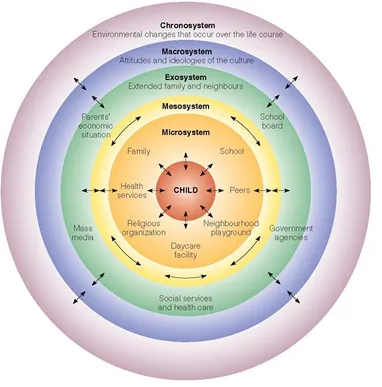
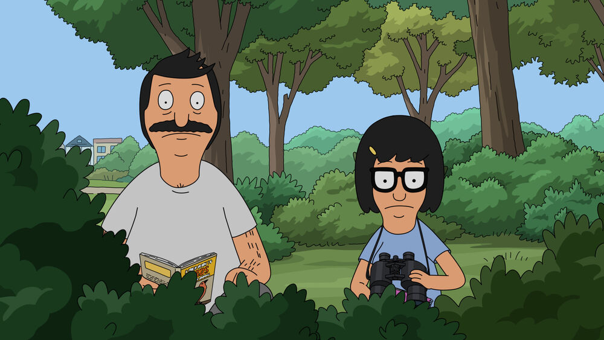
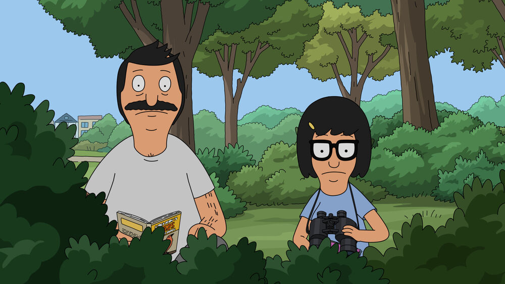

Bronfenbrenner's Ecological Systems Theory & Adolescent Development:
a social cognitive neuroscience perspective
Will Moore | Gaston College | 11-21-2025
Frames, Brains, & Growing Pains

Will Moore | Gaston College | 11-21-2025
Frames, Brains, & Growing Pains
Choose your glasses wisely!
Always use your brain. Never abuse neuroscience.
Adolescence is complicated, but traditional narratives about teens are oversimplified.
Will Moore | Gaston College | 11-21-2025
Bronfenbrenner, 1977

Bob's Burgers, 2025
Tina Belcher
teen facts:
- 13 years old
- extraverted
- socially awkward
- hall monitor
Tina Belcher

can't see a thing without glasses
What kind of scope do we use...

...to study the storm & stress of adolescence?
the focus dictates the lens
 


Bronfenbrenner's Ecological Systems (1977)
■ Individual (Tina)
■ Microsystem
■ Mesosystem
■ Exosystem
■ Macrosystem
■ Chronosystem
Individual
Tina's brain development, personality, experiences
Microsystem
Family, school, friends - direct interactions
Mesosystem
Connections between microsystems
Exosystem
Parents' work, community resources
Macrosystem
Cultural values, societal norms
Chronosystem
Time, transitions, historical context
multiple interacting levels of analysis
Is this the right scope?
Ecological Systems Theory: Pros & Cons
Strengths
- escapes the lab
- multiple levels of analysis
- broad cultural impact
Weaknesses
- impossible to disprove
- boundaries unclear
- beyond the scope of psychology
NOT ACTUALLY A THEORY!!!
"All models are wrong..."

"...but some are useful."
~George Box